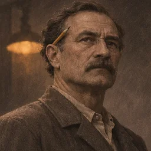

Кирилл Савин
плут 3 · ОЗ 24 · КД 13 · Скорость 30 фтНезависимый осмотрщик помещений
Потёртый блокнот, мягкие туфли, складная линейка в чехле.
Семья писателя попросила тебя проверить, что именно можно было увидеть с гостиничной галереи.
Открыть фигурку для поля
Оружие и заклинания
Оружие · Боевой посох
Галина Труш
жрец 3 · ОЗ 24 · КД 11 · Скорость 30 фтПосредница между работниками и семьями клиентов
Тёмное пальто, простая записная книжка, спокойный низкий голос.
Ты согласилась помогать семье при условии, что служащим позволят говорить без начальства.
Открыть фигурку для поля
Оружие и заклинания
Оружие · Боевой посох

Матвей Осокин
волшебник 3 · ОЗ 20 · КД 12 · Скорость 30 фтТехник по обслуживанию зданий
Чистый рабочий пиджак, карандаш за ухом, ладони в старых мозолях.
Инспектор пригласила тебя объяснять устройства дверей простыми словами, не объявляя служащих подозрительными за знание здания.
Открыть фигурку для поля
Оружие и заклинания
Оружие · Боевой посох
Рая Белик
воин 3 · ОЗ 31 · КД 11 · Скорость 30 фтСопровождающая при выемке имущества
Крепкий плащ, короткая стрижка, обычная дорожная трость.
Семье нужен человек, способный сохранить спокойствие у опечатанной двери.
Открыть фигурку для поля
Оружие и заклинания
Оружие · Боевой посох
Никита Орелин
волшебник 3 · ОЗ 20 · КД 12 · Скорость 30 фтЧертёжник обмерной мастерской
Тубус с пустой бумагой, чернильное пятно на манжете.
Тебе поручили нарисовать фактический этаж с одинаковым уважением к гостевым и служебным помещениям.
Открыть фигурку для поля
Оружие и заклинания
Оружие · Боевой посох
Дина Шестак
плут 3 · ОЗ 24 · КД 13 · Скорость 30 фтСтенографистка общественных разбирательств
Две ручки разного цвета, плоская папка, внимательный взгляд.
Ты пришла записывать, какие слова действительно произнесены, а какие к ним добавили слушатели.
Открыть фигурку для поля
Оружие и заклинания
Оружие · Боевой посох
Арсен Холм
жрец 3 · ОЗ 24 · КД 11 · Скорость 30 фтПредставитель общества взаимной помощи служащих
Старомодный жилет и конверты с пустыми бланками обращений.
Работники просят проследить, чтобы расследование не превратилось в коллективное наказание.
Открыть фигурку для поля
Оружие и заклинания
Оружие · Боевой посох
Полина Рудь
воин 3 · ОЗ 31 · КД 11 · Скорость 30 фтРаспорядительница небольших публичных показов
Тёмный костюм, карманные карточки, привычка оставлять свободный проход.
Тебя пригласили, если потребуется объяснить сложное наблюдение людям, которые хотят немедленного ответа.
Открыть фигурку для поля
Оружие и заклинания
Оружие · Боевой посох